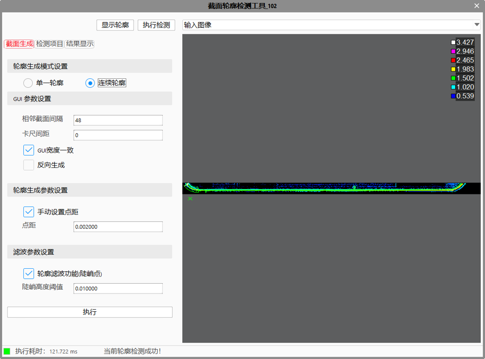
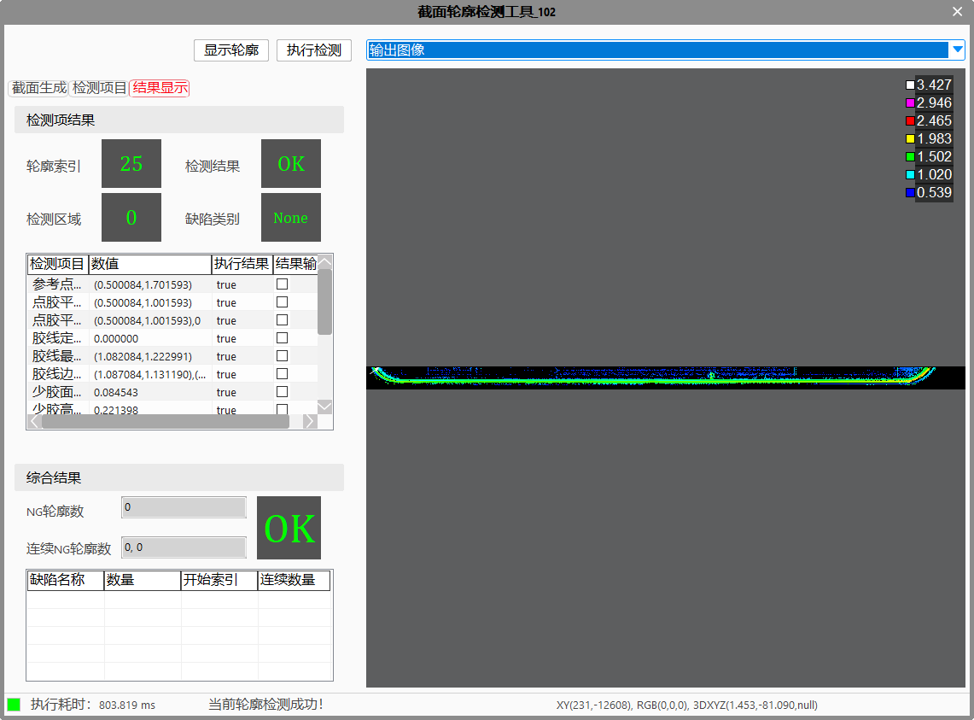

截面轮廓检测工具对单图像段内的轮廓的检测流程、参数设置、结果显示等流程进行固化集成，内部集成了截面生成、位置、定位、面积、尺寸、边界框、中点、交点、直线、圆、边界框、轮廓点转空间点、边沿点、根部点检测等工具功能，以达到简化检测工程、加强调试效率，增加工程扩展性的目的。


| 参数名称 | 参数描述 |
|---|---|
| 输入深度图像 | 输入待检测的深度图像。 |
| 二维线性变换 | 目标相对于模板的平移、旋转、缩放变换。 |
| 位置偏移 | 定向设置位置工具中的固定偏移点设置功能，在位置工具中选择“固定偏移点模式”，参考点选中后，点击“引用偏移”的功能，引用偏移的XY方向参数及为参数链中的位置偏移； |
| 参数名称 | 参数描述 |
|---|---|
| 向量交互ROI | 连续模式选择“否”时生效。用于指定截面的方向、大小。 |
| 手动设置点距 | 连续模式选择“否”时生效。选择“是”，显示点距参数，设置自定义点距作为X方向分辨率。 |
| 点距 | 连续模式选择“否”时生效。用户设置自定义点距作为X方向分辨率，取值范围[0.0001,1]，单位：毫米。 |
| 轮廓提取区域宽度 | 连续轮廓ROI内部截取轮廓时，分为N个轮廓提取区域，每个轮廓数据提取区域生成一个截面，参数是设置轮廓数据提取区域的宽度，且(宽度+间距)>=1，取值范围1~10000，单位：像素。 |
| 轮廓提取区域间距 | 连续轮廓ROI内部截取轮廓时，分为N个轮廓提取区域，每个轮廓提取区域生成一个截面，参数是设置相邻卡尺中心之间的距离，且(宽度+间距)>=1，取值范围0~10000，单位：像素。 |
| 反向生成 | 连续模式选择“是”时生效。正向方向为GUI中小箭头方向，该参数为“是”，则按照相反的方向生成截面轮廓。 |
| GUI宽度一致 | 连续模式选择“是”时生效。选择“是”时，GUI宽度同步变化；选择“否”时，各段GUI可设置不同宽度。 |
| 启用轮廓滤波 | 勾选时，截面轮廓生成后会自动进行陡峭点滤波功能； |
| 轮廓索引 | 当前轮廓索引 |
各个子工具高级界面参数参照轮廓类相同名字工具的属性参数，如截面轮廓检测面积子工具高级界面参数，可以参照轮廓面积工具属性参数； |
| 参数名称 | 参数描述 |
|---|---|
| 输入深度图像 | 当前工具输入的深度图像 |
| 输出轮廓数组 | 截取的轮廓数组 |
| NG轮廓数 | 工具执行检测后的缺陷轮廓总数； |
| 最小连续NG轮廓数 | 工具执行检测后的缺陷轮廓连续最小条数； |
| 最大连续NG轮廓数 | 工具执行检测后的缺陷轮廓连续最大条数； |
| 检测结果 | 输出各子工具的结果数据，各工具的输出结果类型不一致，引用时需注意同步类型转换； |
| 执行结果 | 工具执行结果； |
| 执行时间 | 工具执行时间； |
| 参数名称 | 参数描述 |
|---|---|
| 输出轮廓数组 | 输出截面生成功能执行后的输出轮廓数组； |
| 输出当前轮廓位置 | 输出轮廓数组的当前索引值； |
| 其余包括监视窗口的数据，供以其他工具使用； |
| 参数名称 | 参数描述 |
|---|---|
| 子工具参数设置vSubToolParam | 子工具参数设置主要针对截面轮廓检测工具中子工具的判定条件参数（Condition），当前子工具的设定参数仅能通过字符串方式输入，参数间利用“,”隔开，第一位为子工具对应名称，后面则是condition对应参数设置，例如“爬墙缺陷判定010,true,0.1,0.01”，上述字符串表示需要对截面轮廓工具中的爬墙缺陷判定010子工具进行参数设置，condition参数的使能为true，最大值0.1，最小值0.01，对应多个condition条件时，按顺序、格式在字符串后方添加即可，如“边界框_016,true,0.4,0.3,false,0.3,0.2”。注意：一个字符串中只能包含一个工具的判定参数，多个工具的请分开设置。 |
| 子工具参数读取vSubToolRead | 子工具参数读取主要针对截面轮廓检测工具中对子工具判定阈值参数（Condition）的获取，类似设置指令直接设置需要查询的子工具名称即可，如vSubToolRead =“爬墙缺陷判定_010”，则对应子工具的判定参数会返回至vSubToolParam变量中，读取出来解析即可。注意：一次仅能查询一个子工具的判定参数； |
| 获取输出窗口中显示的子工具计算结果 | 主要针对子工具计算结果输出供后续工具使用，如获取直线子工具的拟合结果，Result=GvTool.GetToolData(“截面轮廓检测工具002.直线001”); line = Result.ValueVec可以得到各个轮廓下的直线； |
a、 定位：3D定位中，轮廓定位工具主要通过固定ROI区域中训练轮廓的特征获取参考特征信息（参考特征点和角度信息），然后根据实时轮廓中相同ROI区域内的实时特征信息计算得到二维变换定位结果，以协助后续进行轮廓测量等操作，工具使用参见“轮廓定位工具”；
b、 位置：对轮廓数据中特定检测区域内的特征点进行定位，包含一般特征点、拐点、固定偏移点以及边沿特征点等，工具使用参见“轮廓位置测量工具”；
c、 高度：对输入的两个特征点之间的高度信息进行测量，工具使用参见“轮廓尺寸测量”；
d、 宽度：对输入的两个特征点之间的宽度信息进行测量，工具使用参见“轮廓尺寸测量”；
e、 面积：3D测量中，轮廓面积工具主要是获取轮廓数据到基准轮廓的面积，工具使用参见“轮廓面积工具”；
f、 距离：获取轮廓数据中两个几何元素之间的角度数值，包括点到点、点到直线、点到圆，工具使用参见“轮廓几何测量工具”；
g、 角度：获取轮廓数据中两个几何元素之间的角度数值，包括直线到直线、点到点，工具使用参见“轮廓几何测量工具”；
h、中点：对输入的两个特征点之间的中点信息进行测量，工具使用参见“轮廓尺寸测量”；
i、 交点：获取轮廓数据中两个几何元素之间的交点信息，包括直线与直线、圆与圆、直线与圆，工具使用参见“轮廓几何测量工具”；
j、 直线：对检测区域内的轮廓数据进行直线拟合或输入特征点生成直线，获取最佳拟合直线或者固定直线结果的参数，工具使用参见“轮廓线圆拟合工具”；
k、 圆：对检测区域内的轮廓数据进行圆拟合或输入特征点生成圆，获取最佳拟合圆或者固定圆结果的参数，工具使用参见“轮廓线圆拟合工具”；
l、 边界框：获取轮廓数据的边界框信息，工具使用参见“轮廓边界框工具”；
子工具引用时需对其进行排序，“执行检测”时仅按列表顺序往下执行输出结果，双击个列表项时均可弹窗对应子工具的属性设置窗口，进行输入参数设置；
m、轮廓点转空间点：将轮廓上的点转化为空间点，且可以显示在深度图像上；
n、预处理：多轮廓图像进行预处理，主要包括：轮廓滤波、轮廓线内点分割；
o、边沿点检测：检测轮廓图像的边沿点，并输出边沿点信息；
p、根部点检测：检测胶水形态轮廓图像的根部点和极值点，并输出宽度、高度等信息；
缺陷判定条件输入仅限对当前列表中的子工具执行结果的判定，多个判定条件输入时可用“&&”隔开，条件输入窗口支持一般逻辑运算符（||、！、&&）。另外每个缺陷判定条件均需选择阈值设定的模式，包括：连续判定、NG总数判定以及统计型判定等。
Step 1 设置截面生成功能各类参数
a、根据应用场景选择轮廓的截取模式；
b、根据截取模式，设置对应的参数；
c、图像中指定位置截取roi位置和对应形状；
d、点击截面生成中的“执行”按钮后生成轮廓数据；
Step 2 设置检测项目及各类子工具的输入参数
a、 检测项设置下拉框中选择对应的子工具名称，点击“添加”、“删除”、“上移”、“下移”按钮对列表中引入的子工具进行增删排序等操作；
b、 缺陷判定设置中点击“添加”、“删除”按钮对缺陷条件列表项进行增删操作；
c、 设置完缺陷条件、阈值模式等参数后点击执行即可检测；
Step 3 执行与输出结果
确定ROI及参数后，执行检测可以得到轮廓数据的缺陷判定情况。
截面轮廓检测工具注意项点：
1、 检测结果：输出检测结果类型引用时需要统一，否则软件报错；
2、 输出轮廓数组：轮廓数组需指定当前索引，数组需与当前显示轮廓位置数值一直；
3、 缺陷位置：缺陷位置输出仅能图形输出显示；
参见“\Samples\3D\深度图\截面轮廓检测工具.gvp”。